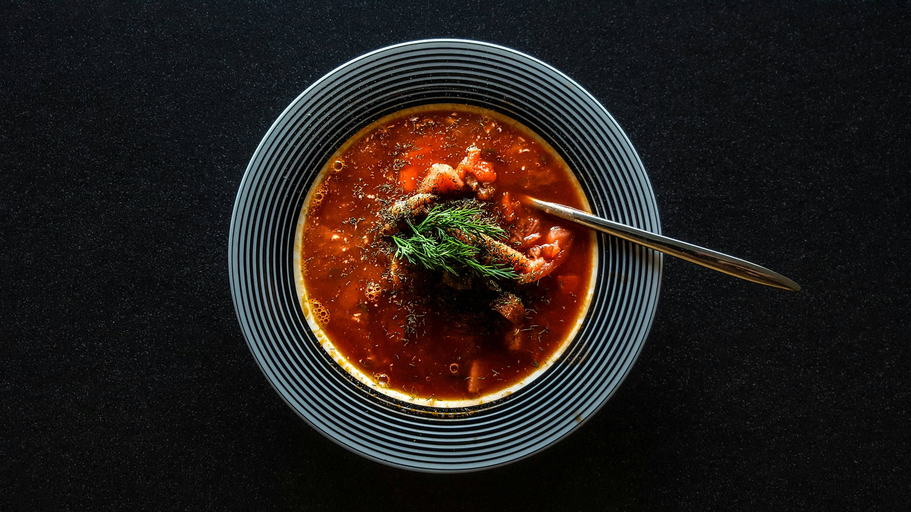

Russian Borscht

Description:
Borscht is a soup, made with meat stock, vegetables and
seasonings, common in Eastern Europe and Northern Asia.
In English, the word borscht is most often associated with the soup's
variant of Ukrainian origin, made with red beetroots as
one of the main ingredients, which give the dish its distinctive
red color.
Ingridients:
- 1 ½ cups thinly sliced potatoes
- 1 cup thinly sliced beets
- 4 cups vegetable stock or water
- 2 tablespoons butter
- 1 ½ cups chopped onions
- 1 teaspoon caraway seed (Optional)
- 2 teaspoons salt
- 1 celery stalk, chopped
- 1 large carrot, sliced
- 3 cups coarsely chopped red cabbage
- black pepper to taste
- ¼ teaspoon fresh dill weed
- 1 tablespoon cider vinegar
- 1 tablespoon honey
- 1 cup tomato puree
- sour cream, for topping
- chopped tomatoes, for garnish
Steps:
-
First step:
- Place sliced potatoes and beets in a medium saucepan over high heat.
- Cover with stock, and boil until vegetables are tender.
- Remove potatoes and beets with a slotted spoon, and reserve stock.
-
Second step:
- Melt butter in a large skillet over medium heat.
- Stir in onions, caraway seeds, and salt; cook until onions become soft and translucent.
- Then stir in celery, carrots, and cabbage.
- Mix in reserved stock; cook, covered, until all vegetables are tender, about 10 minutes.
-
Third step:
- Add potatoes and beets to the skillet.
- Season with black pepper and dill weed.
- Stir in cider vinegar, honey, and tomato puree.
- Cover, reduce heat to medium low, and simmer at least 30 minutes.
- Serve topped with sour cream, extra dill weed, and chopped fresh tomatoes.
List of recipes